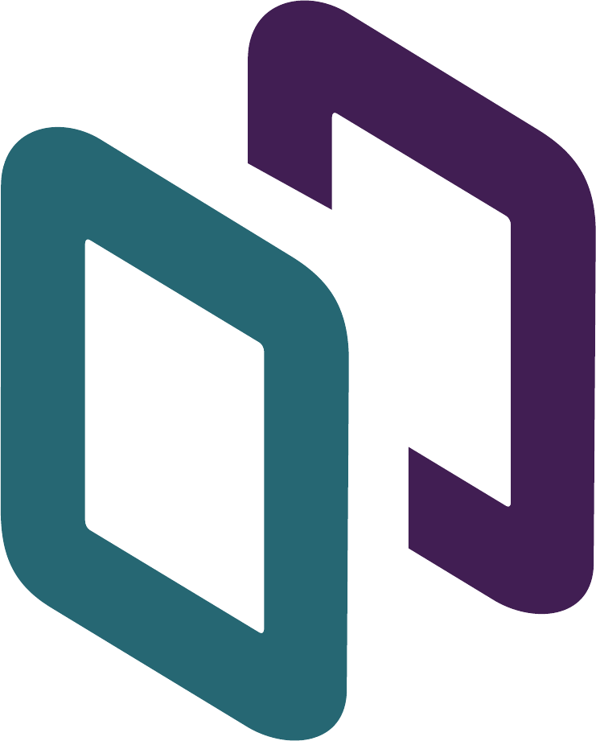
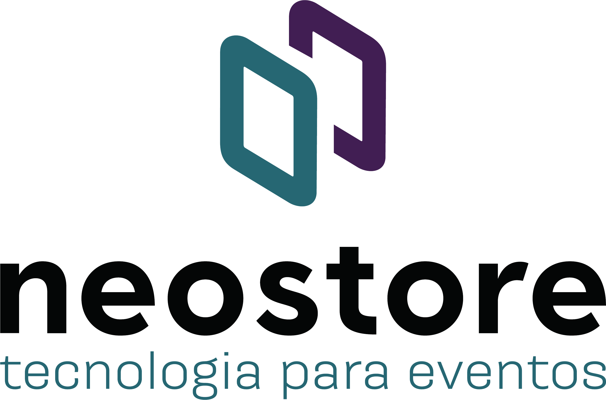

Sistema gráfico · derivado dos dois módulos
Bullet · módulos conectados

Áudio profissional balanceado
Operação em tempo real
Equipe técnica em campo
Watermark · símbolo grande

Operação 2026
142
eventos
Pattern · institucional · 6% opacity
Section divider
Próximo bloco
Escopo técnico